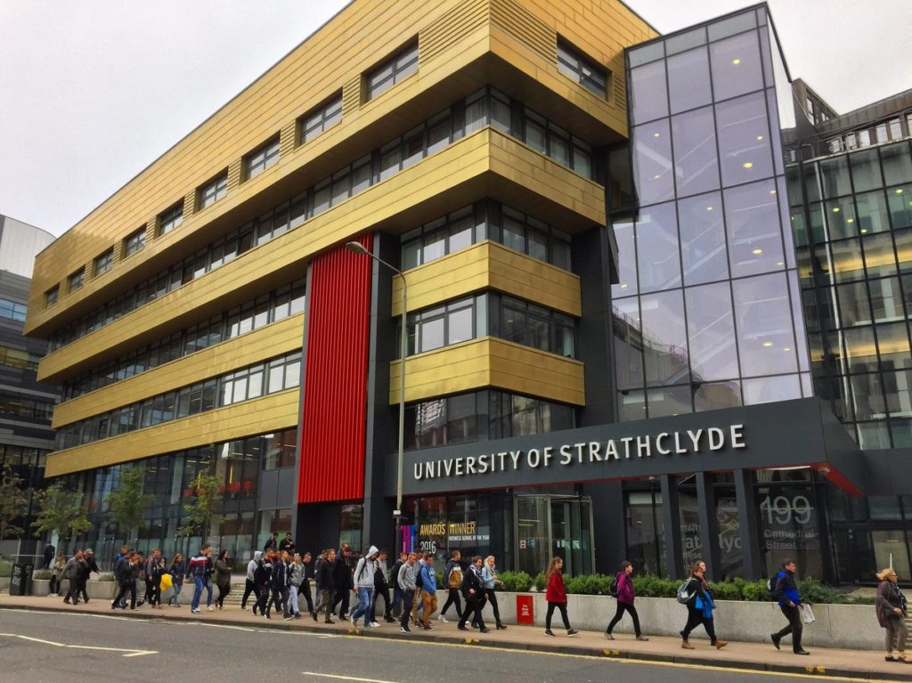

My first professional experience was at Klik2learn, a company making software for teaching English.
I still remember that exciting feeling when I first fixed a bug in the largest program I had worked with so far- Journey2English.
I then participated in the design of the infrastructure for their new course- Journey2BasicSkills. It was very rewarding to see that my design decisions helped future developers develop the course more smoothly.
After returning to Klik2learn from my placement at CERN, I have worked on a group chat and data reporting/visualising features of Klik2learn's new Digital Learning Hub.
Klik2learn is where I have grown most as a developer. I got exposure to a large codebase and a variety of web technologies, while working on challenging and interesting projects. I felt that a lot depended on me
and I enjoyed the impact I had on the product.
Technologies and languages used:
HTML5, CSS, Javascript,
React with Redux and Hooks,
Meteor JavaScript web framework based on Node.js,
PHP on CodeIgniter
MySQL and MongoDB
CERN - Geneva, Switzerland
Technical Student
June 2019- July 2020
It is still difficult for me to realise that I was writing software for protecting the largest magnets in the world that accelerate the particles in the tunnel of LHC.
I worked on a data link for magnet protection devices. I designed and implemented a protocol for effective and faultless communication between device nodes, investigated libraries for radiationproof Ethernet
communication, wrote controls software and an application for testing microcontrollers.
The year I spent at CERN was one of the best in my life. Not only did I experience work at a renowned research institute but I also socialised with an amazing international community of scientists and engineers,
travelled, did skiing and learnt French.
Technologies and languages used:
Python and Flask with HTML/CSS/Javascript/jQuery for web application development,
C++ for CERN's propriatry controls software framework- FESA,
C on an STM controller
My education:

University of Strathclyde in Glasgow
BSc of Computer Science
September 2016- May 2021
I am a 4th year student at the University of Strathclyde in Glasgow.
The University has given me a great base to become a developer and a drive to learn more. I wrote my first line of code at Strathclyde and found passion that I want to pursue now in my career.
Scotland
was also my first experience abroad. Living independently in Scotland taught me a great deal of maturity and versatility. I am open for getting out of my comfort zone and can cope with various environments.
Final year project:
Declutter challenge! I am developing a Machine Learning model that predicts if a Java comment is informative or not. I am hoping to then use it as an extension for
Visual Studio Code editor.